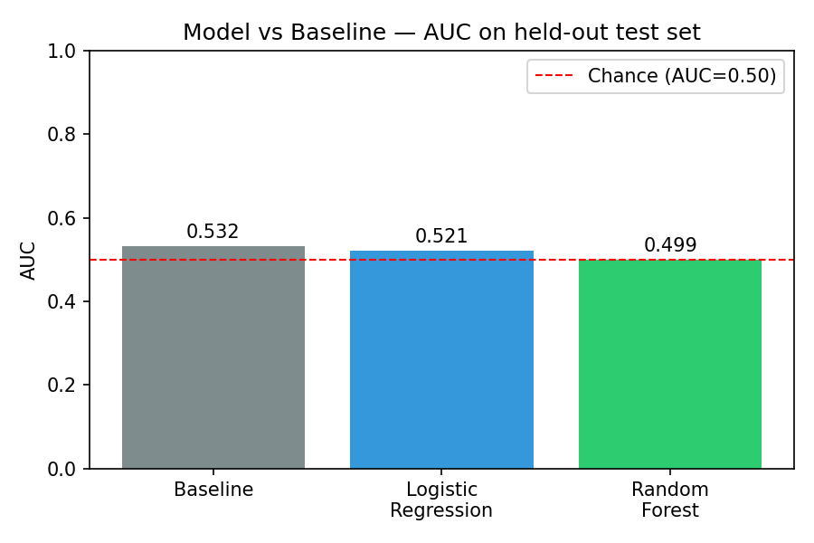

4. Results
(We'll paste results here.)
Model Comparison

Precision@K

Feature Importance

Author: Subata Khan
Lane: Refresh / Content Opportunity Scoring
Repository:
github.com/subata24/ml-internship
Date: August 2026
(We'll paste your abstract here.)
(We'll paste Section 1 here.)
(We'll paste Section 2 here.)
(We'll paste Section 3 here.)
(We'll paste results here.)

(We'll paste Section 5 here.)
(We'll paste Section 6 here.)
Notebook: View all notebooks
Repository: GitHub Repository